Findings
What the data supports
Student-authored opinion writing shows a substantial increase in lexical diversity and a decrease in function-word density between the 2015–2019 baseline and 2024–2026. The effect persists when each author counts as a single observation, so it is not produced by a small number of prolific columnists, and it is markedly larger than the change in the same newspaper's news reporting over the same period.
What the data does not support
No causal attribution to generative AI. The metrics disagree on when the change began — some inflect years before generative AI was available — the opinion section contracted sharply over the window so that later years rest on far fewer writers, and an exploratory list of AI-associated vocabulary shows no increase specific to opinion writing.
Corpus
Collected from the publication's WordPress REST API. Articles were cleaned of markup, filtered by length, and deduplicated by identifier, URL and text hash.
Articles per year by section
The opinion section contracted far more sharply than news reporting. 2026 is partial.
| year | n_articles | n_opinions | n_news | n_unique_author_ids | n_resolved_author_names | mean_word_count | median_word_count | total_words |
|---|---|---|---|---|---|---|---|---|
| 2015 | 1204 | 448 | 756 | 212 | 0 | 743.4 | 739.5 | 895027 |
| 2016 | 1174 | 407 | 767 | 203 | 0 | 748.9 | 711.5 | 879252 |
| 2017 | 1072 | 427 | 645 | 211 | 0 | 809.7 | 736.0 | 868016 |
| 2018 | 1125 | 368 | 757 | 202 | 0 | 836.5 | 741.0 | 941034 |
| 2019 | 1187 | 332 | 855 | 229 | 0 | 794.3 | 705.0 | 942857 |
| 2020 | 1446 | 378 | 1068 | 427 | 0 | 882.5 | 777.0 | 1276080 |
| 2021 | 972 | 183 | 789 | 285 | 0 | 772.5 | 713.5 | 750869 |
| 2022 | 765 | 131 | 634 | 184 | 0 | 810.8 | 725.0 | 620241 |
| 2023 | 577 | 105 | 472 | 148 | 0 | 871.2 | 785.0 | 502694 |
| 2024 | 583 | 92 | 491 | 150 | 0 | 759.9 | 711.0 | 443023 |
| 2025 | 702 | 155 | 547 | 137 | 0 | 773.5 | 720.5 | 542999 |
| 2026 | 435 | 109 | 326 | 86 | 0 | 795.6 | 756.0 | 346080 |
When did it change?
Year-by-year medians for student-authored opinion articles only, with guest and institutional submissions removed.
Lexical diversity (MATTR), student authors only
MATTR uses a moving window and is robust to article length, unlike simple type–token ratio. Later years rest on small samples — read the trajectory against the article counts in the table below.
Function-word ratio and readability
Plotted on independent axes; the two series are not directly comparable in magnitude.
| year | n | mattr | func_word_ratio | avg_sentence_len | flesch_reading_ease |
|---|---|---|---|---|---|
| 2015 | 367 | 0.73 | 0.4466 | 25.32 | 44.2851 |
| 2016 | 267 | 0.7263 | 0.4652 | 26.81 | 47.0416 |
| 2017 | 321 | 0.7349 | 0.4651 | 25.39 | 48.7109 |
| 2018 | 260 | 0.7363 | 0.4586 | 24.815 | 49.3153 |
| 2019 | 188 | 0.7302 | 0.4585 | 26.0 | 44.2376 |
| 2020 | 333 | 0.7281 | 0.4418 | 25.34 | 42.8196 |
| 2021 | 103 | 0.731 | 0.4476 | 25.55 | 44.4157 |
| 2022 | 46 | 0.7378 | 0.4343 | 27.105 | 41.4308 |
| 2023 | 28 | 0.7252 | 0.4346 | 25.55 | 38.9944 |
| 2024 | 32 | 0.7459 | 0.4148 | 24.605 | 39.5524 |
| 2025 | 69 | 0.7581 | 0.4177 | 24.46 | 42.0758 |
| 2026 | 61 | 0.7632 | 0.4143 | 23.34 | 40.3189 |
Change-point analysis
Segmented regression against a single-line baseline. A segmented model always fits at least as well as a straight line, so a breakpoint counts only when it clearly beats the linear fit and is well separated from the runner-up year.
| metric | best_breakpoint | best_r2 | runner_up | r2_gap | r2_linear | linear_p | slope_before | slope_after |
|---|---|---|---|---|---|---|---|---|
| mattr | 2023 | 0.904 | 2024 | 0.0014 | 0.5079 | 0.0093 | 0.0006 | 0.0126 |
| func_word_ratio | 2017 | 0.9469 | 2018 | 0.0147 | 0.7867 | 0.0001 | 0.0186 | -0.006 |
| avg_sentence_len | 2022 | 0.7504 | 2023 | 0.1244 | 0.2609 | 0.0897 | -0.0586 | -0.862 |
| flesch_reading_ease | 2019 | 0.8716 | 2018 | 0.1141 | 0.6065 | 0.0028 | 1.676 | -0.5735 |
The control corpus
The same newspaper's news reporting was collected and processed identically. It provides an internal control for editorial, topical and platform changes that would affect all published text.
Effect sizes with 95% confidence intervals
Rank-biserial correlation, baseline versus recent period. Bars show bootstrap confidence intervals. Where the Opinions and News intervals do not overlap, the difference between corpora is itself reliable.
| corpus | metric | n_pre | n_post | median_pre | median_post | p_value | effect_size | effect_ci_low | effect_ci_high | p_corrected | significant |
|---|---|---|---|---|---|---|---|---|---|---|---|
| opinions | mattr | 1982 | 356 | 0.729 | 0.749 | 0.0 | 0.3722 | 0.3102 | 0.4291 | 0.0 | True |
| opinions | ttr | 1982 | 356 | 0.467 | 0.473 | 0.0143 | 0.0814 | 0.021 | 0.1412 | 0.0198 | True |
| opinions | root_ttr | 1982 | 356 | 13.1268 | 14.4421 | 0.0 | 0.3934 | 0.3275 | 0.452 | 0.0 | True |
| opinions | hapax_ratio | 1982 | 356 | 0.7036 | 0.7141 | 0.0 | 0.1352 | 0.0738 | 0.194 | 0.0001 | True |
| opinions | func_word_ratio | 1982 | 356 | 0.4516 | 0.4159 | 0.0 | -0.4639 | -0.5174 | -0.4075 | 0.0 | True |
| opinions | avg_sentence_len | 1982 | 356 | 25.59 | 24.335 | 0.0 | -0.1599 | -0.2214 | -0.0961 | 0.0 | True |
| opinions | med_sentence_len | 1982 | 356 | 24.0 | 23.0 | 0.0 | -0.1422 | -0.2052 | -0.0823 | 0.0 | True |
| opinions | flesch_reading_ease | 1982 | 356 | 45.3018 | 40.0857 | 0.0 | -0.261 | -0.3205 | -0.1976 | 0.0 | True |
| opinions | flesch_kincaid_grade | 1982 | 356 | 12.306 | 12.6733 | 0.0071 | 0.0894 | 0.0267 | 0.1497 | 0.0107 | True |
| news | mattr | 3780 | 1364 | 0.7183 | 0.7268 | 0.0 | 0.1614 | 0.126 | 0.1964 | 0.0 | True |
| news | ttr | 3780 | 1364 | 0.4717 | 0.4805 | 0.0013 | 0.0585 | 0.024 | 0.0931 | 0.0022 | True |
| news | root_ttr | 3780 | 1364 | 11.8686 | 12.1828 | 0.0 | 0.0924 | 0.0576 | 0.1263 | 0.0 | True |
| news | hapax_ratio | 3780 | 1364 | 0.6904 | 0.695 | 0.0174 | 0.0434 | 0.0087 | 0.0791 | 0.0224 | True |
| news | func_word_ratio | 3780 | 1364 | 0.4137 | 0.4024 | 0.0 | -0.2025 | -0.2373 | -0.1709 | 0.0 | True |
| news | avg_sentence_len | 3780 | 1364 | 26.58 | 26.52 | 0.9241 | -0.0017 | -0.037 | 0.0333 | 0.9241 | False |
| news | med_sentence_len | 3780 | 1364 | 25.0 | 25.0 | 0.56 | 0.0106 | -0.0247 | 0.0437 | 0.5929 | False |
| news | flesch_reading_ease | 3780 | 1364 | 42.9655 | 42.1984 | 0.0559 | -0.0349 | -0.0718 | -0.0002 | 0.067 | False |
| news | flesch_kincaid_grade | 3780 | 1364 | 12.5245 | 12.422 | 0.1959 | -0.0236 | -0.0591 | 0.0126 | 0.2204 | False |
Exploratory AI-associated vocabulary
Not a detector
This word list is drawn from public commentary about the style of large-language-model output. It has not been validated against known AI-generated text and cannot establish that any article was machine-written. Several terms also occur naturally in articles about artificial intelligence, which would inflate later years irrespective of authorship.
Frequency per million words, by section
If both sections move together, the pattern is not specific to opinion writing.
Figures
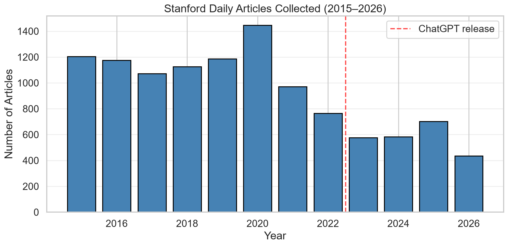
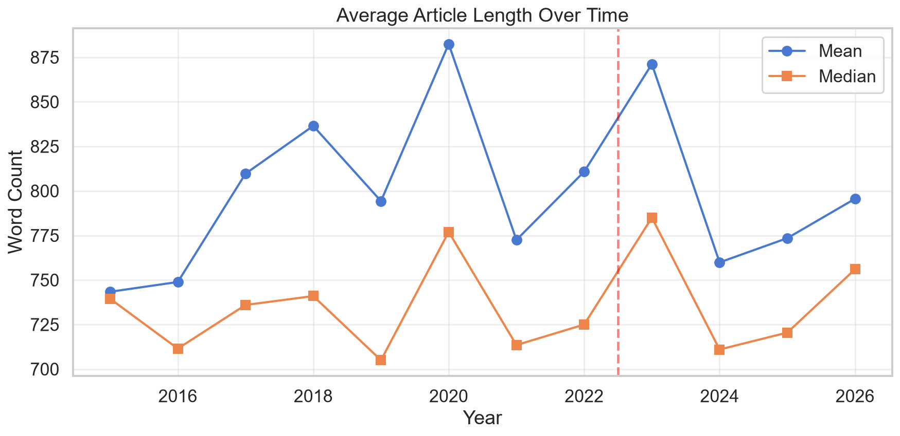
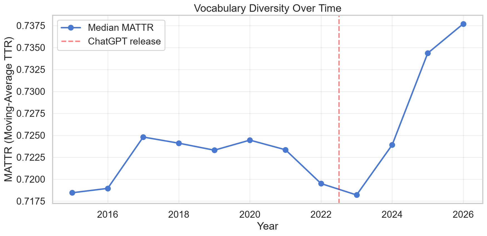
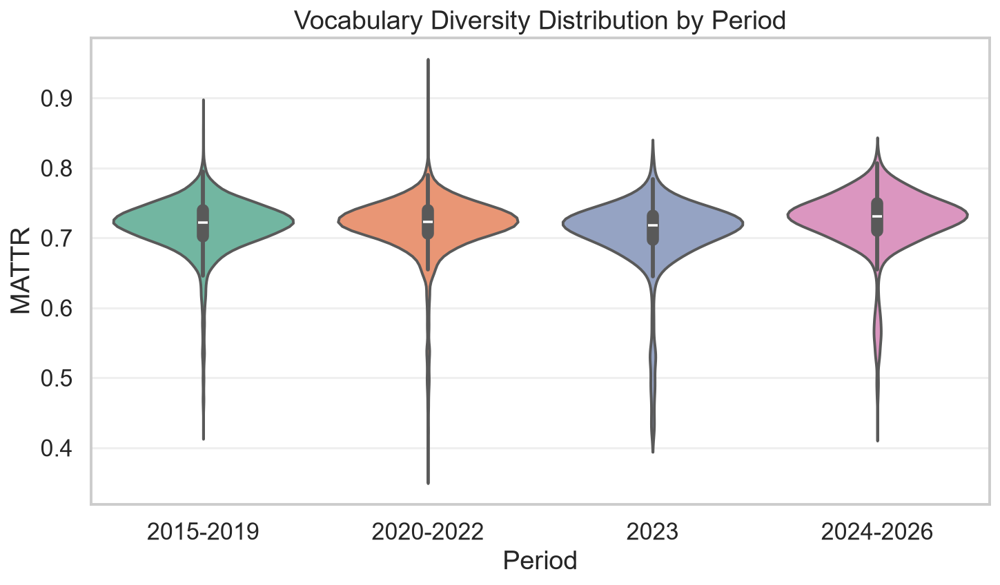
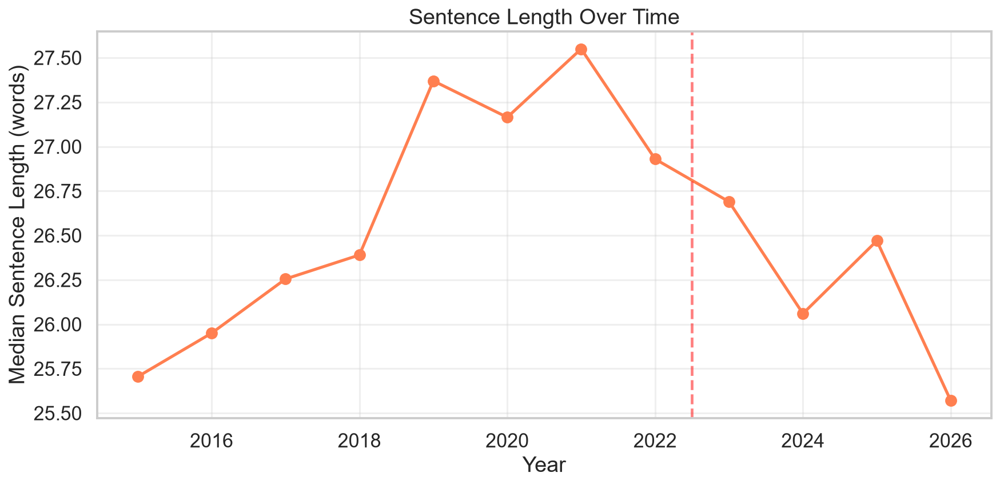
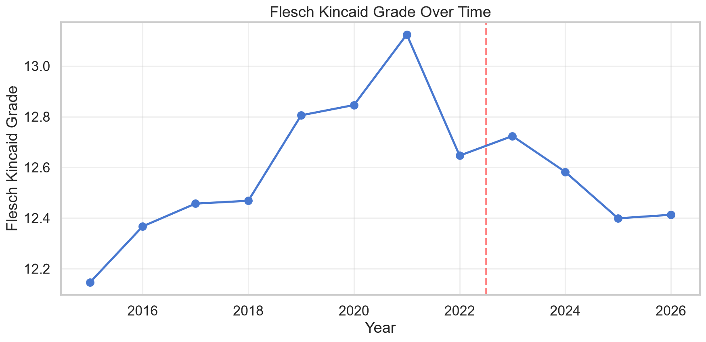
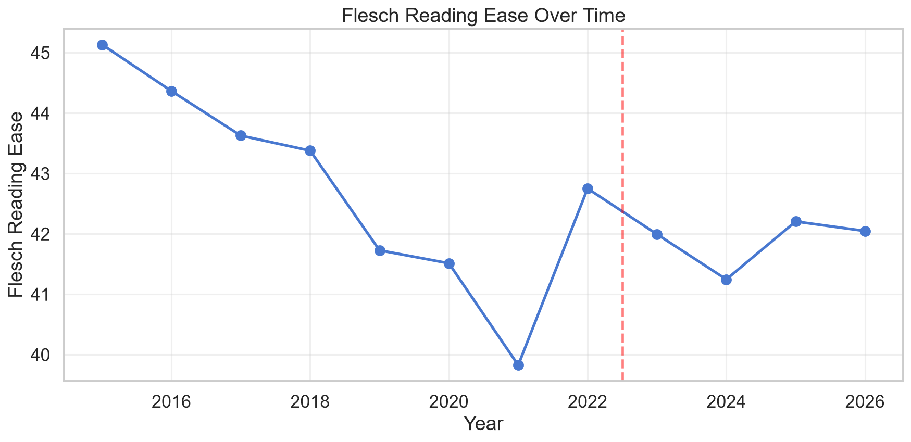
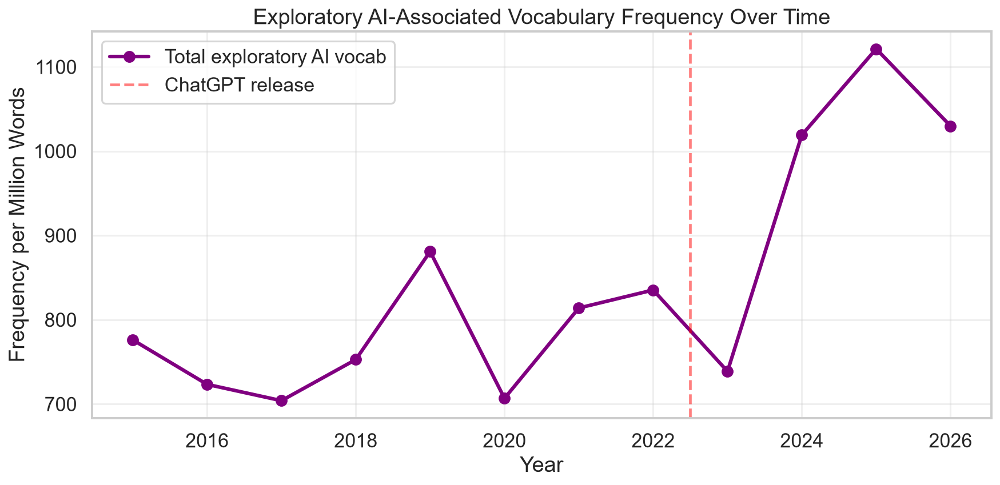
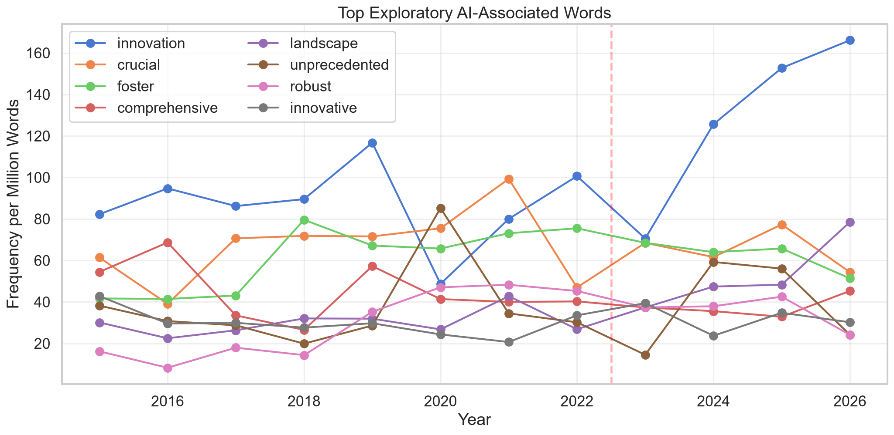
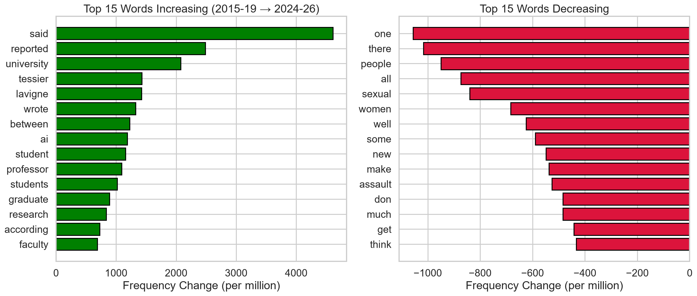
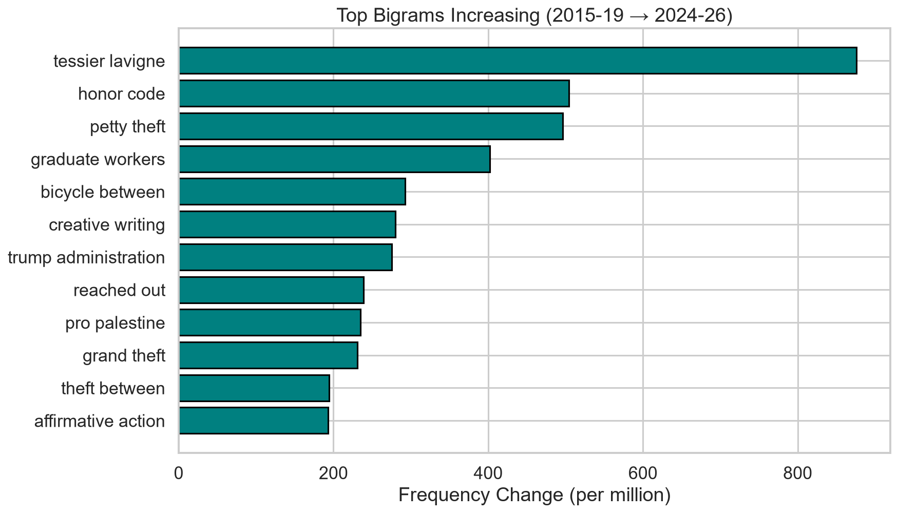
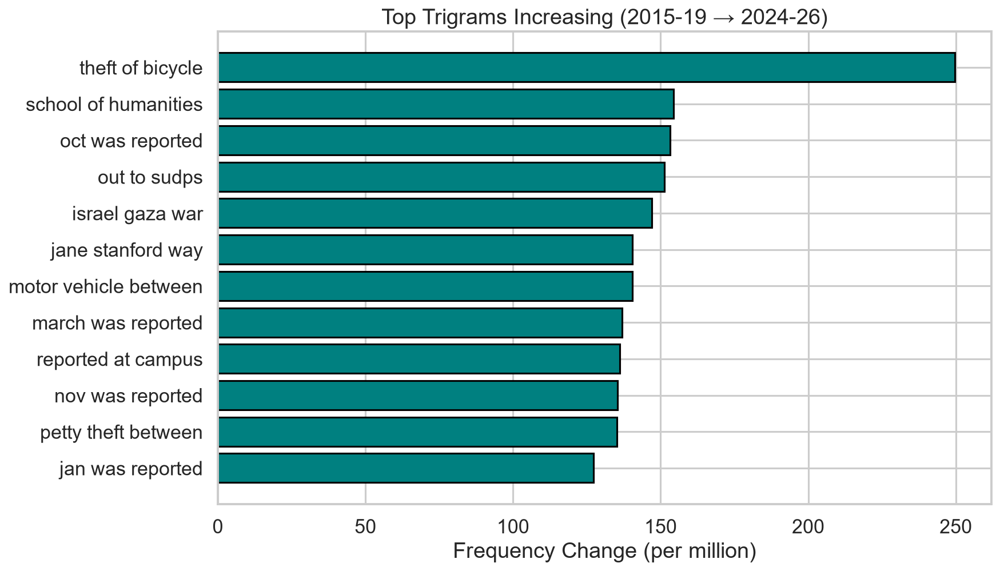
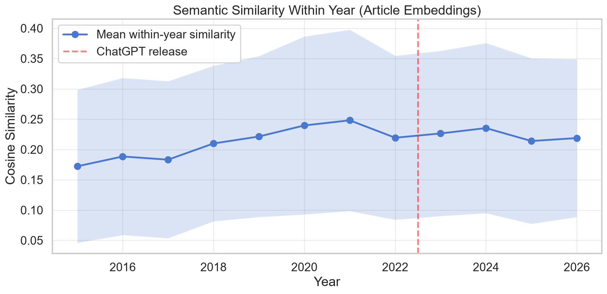
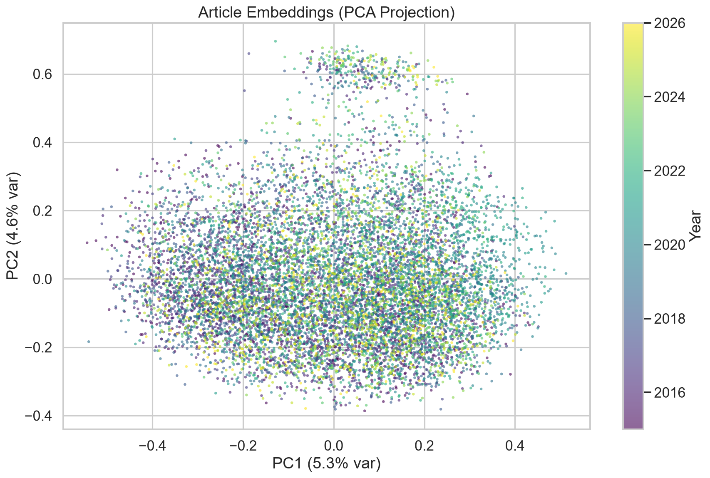
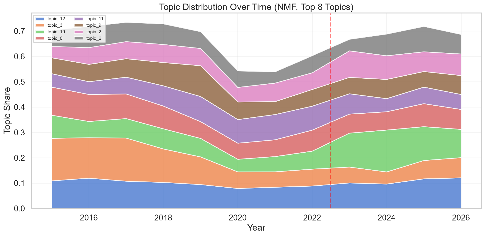
Limitations
- No causal identification. This is observational. No measure of AI use exists for these authors.
- Confounded timing. The contraction of the opinion section coincides with generative-AI availability. Selection into who continued writing cannot be separated from an AI effect in this design.
- Pseudonymous authors. The publication's users endpoint requires authentication, so analysis uses numeric author identifiers. Individuals cannot be verified as students.
- Heuristic authorship classification. Guest content is identified by title prefix, byline and volume, not verified affiliation.
- Small recent samples. Student-authored opinion counts are low in later years, so yearly medians there are unstable.
- Length-sensitive metrics. Root type–token ratio scales with article length and is reported for reference only, not used for inference.
- Embedding truncation.
sentence-transformers/all-MiniLM-L6-v2encodes a limited number of word-pieces, so semantic results describe article openings. - Partial final year. 2026 runs only to 2026-08-10.
Data and reproducibility
Every figure and table on this page is generated from the pipeline output.
Linguistic metrics use spaCy en_core_web_sm; embeddings use
sentence-transformers/all-MiniLM-L6-v2. All 34 result tables:
- ai_associated_vocabulary.csv
- author_stats.csv
- between_year_similarity.csv
- category_stats.csv
- changepoint_analysis.csv
- diag_ai_vocab_by_corpus.csv
- diag_author_concentration.csv
- diag_author_level_tests.csv
- diag_changepoint_widened.csv
- diag_composition.csv
- diag_final_author_level.csv
- diag_final_student_changepoint.csv
- diag_final_student_yearly.csv
- diag_genre_mix.csv
- diag_genre_stratified_tests.csv
- diag_guest_share_by_year.csv
- diag_guest_vs_student.csv
- diag_length_stratified_tests.csv
- diag_length_trends.csv
- diag_student_only_tests.csv
- diag_within_corpus_tests.csv
- linguistic_metrics.csv
- linguistic_metrics_by_year.csv
- ngrams_by_year.csv
- semantic_similarity_stats.csv
- similarity_trend.csv
- statistical_results.csv
- tfidf_by_year.csv
- top_ngram_changes.csv
- top_vocabulary_changes.csv
- topic_distributions.csv
- topic_top_words.csv
- word_freq_by_year.csv
- yearly_corpus_statistics.csv